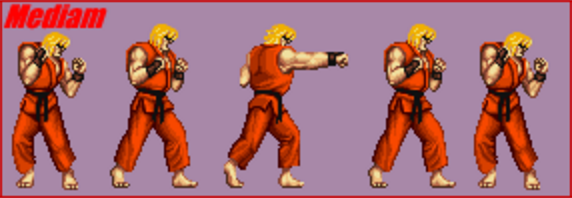

Um artista costuma fazer a animação completa de um determinado sprite, porém nem sempre será necessário utilizar todos os frames da animação para causar o mesmo efeito.
Mesmo com sprites detalhados, nem sempre a animação precisa ter muitos frames. Por exemplo, se você reparar em um jogo de luta 2D, a animação dos golpes normais (chute e soco) é muito rápida, praticamente um frame de antecipação e um do golpe. Muitos frames mostrando o golpe em detalhes vai pesar na memória, não será percebido no jogo e vai precisar de mais trabalho do artista.
Na imagem abaixo do jogo Street Fighter II, do Super Nintendo, podemos ver o que foi dito acima. Os dois primeiros frames são a antecipação, o frame do meio é o golpe, e os dois últimos frames é o feedback para o jogador após o golpe. Você pode conferir a spritesheet completa do Ken clicando aqui.

Em jogos que possuem animações rápidas, quanto menos detalhes tiver é melhor. O importante é focar no que a animação deve passar, como a sensação de um golpe rápido em um jogo de luta. Vale mais a pena investir em detalhes do que em mais frames, assim o jogo fica mais bonito, menos pesado e será possível ver toda animação sem desperdiçar frames.